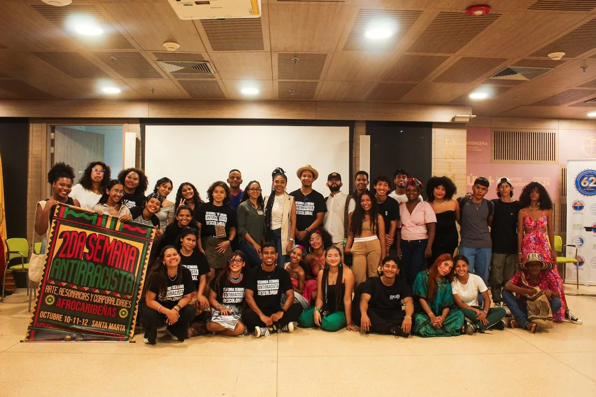
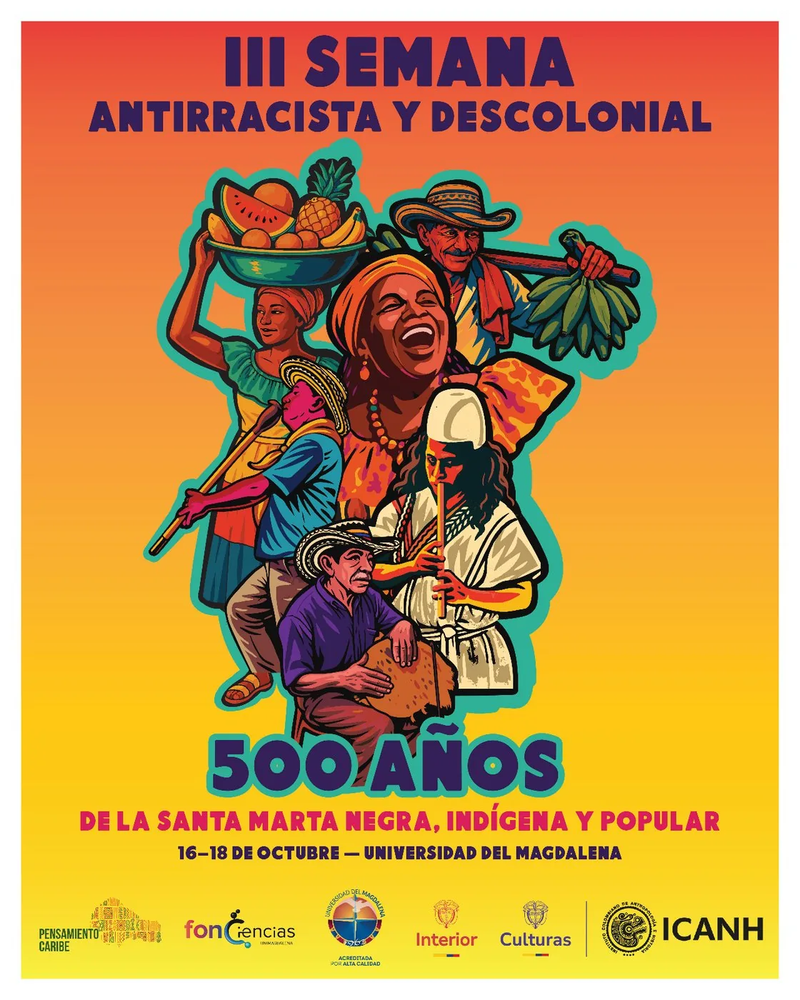

Semana Antirracista y Decolonial
Espacio anual de conversación, formación y acción política contra el racismo, articulando pensamiento académico, prácticas comunitarias y voces del Caribe Colombiano. Tres ediciones realizadas, cuarta en camino.
Declaración de apertura · 12 de octubre
Día de la interculturalidad y el antirracismo
Con la resolución 0138 del 31 de mayo de 2021, el Ministerio de Cultura de Colombia puso fin a la ignominia de nominar el 12 de octubre como el día de la raza, fecha en la que se solía celebrar el "descubrimiento" de América exaltando la herencia hispana de las antiguas colonias. Si bien es un gran avance en términos de dar un giro de sentido, al declarar el 12 de octubre como el "Día de la Diversidad Étnica y Cultural de la Nación", muy acorde con los fundamentos multiculturales de nuestra Constitución de 1991, consideramos que esta denominación se circunscribe a una lógica de supremacía blanco-mestiza que solo celebra la diversidad etnocultural, basada en principios de inclusión que no cuestionan las raíces estructurales e históricas de la desigualdad y de la injusticia etnoracial.
España, en 1914, en su agonía y nostalgia imperial, llamó esta fecha la "Fiesta de la Raza" como una manera de conmemorar la gran hazaña de Colón y su papel providencial de llevar la fe cristiana y la civilización al "Nuevo Mundo". Con el fin de la Segunda Guerra Mundial, el concepto de raza se convirtió en un término proscrito, razón por la cual la raza fue reemplazada por el término hispanidad y finalmente reducida en 1987 al "Día Nacional de España". Como bien lo expresa el Ministerio de Cultura en su justificación del cambio nominal, la mayoría de naciones suramericanas han renombrado esta fecha enalteciendo a los pueblos indígenas y afrodescendientes del Abya Yala y su aporte a las naciones del continente. No obstante, resulta sintomático que seamos los últimos en resignificar esta fecha apelando a la consigna de la celebración de la pluriculturalidad y la inclusión. Sin desconocer los grandes avances en términos de los reconocimientos jurídicos otorgados por la Constitución vigente, consideramos que esta fecha, más que dar cuenta de lo que ya sabemos, es decir, nuestra diversidad cultural, debe poner el énfasis en culminar el proceso inacabado de la descolonización: descolonización epistemológica, institucional y subjetiva.
Para los pueblos aimaras y quechuas, por ejemplo, 1492 marcó el inicio de un pachakuty, un evento de transformación radical del tiempo y del espacio que puso literalmente el mundo patas pa' arriba. Para el filósofo boricua Nelson Maldonado-Torres se trató de una catástrofe doble: el genocidio indígena y la esclavización de millones de africanos. En ambos casos se trató de un gran trauma, una herida que no cierra al permanecer abierta por las continuidades del colonialismo, manifiesto en la exclusión histórica de las personas racializadas en las repúblicas criollas. El racismo está inscrito en la historia. Esto quiere decir que no ha estado siempre. El racismo que padecemos en el presente tiene su origen en la colonización ibérica de lo que hoy conocemos como América y que las naciones indígenas andinas llaman Abya Yala. De manera que el racismo tiene una densidad histórica que hay que desenmarañar, por ser una de las más nefastas permanencias del colonialismo como organizador de diferencias antropológicas que justifican la exclusión, la superexplotación y la subhumanización.
Por esta razón, no celebramos la diversidad cultural de la nación. Conmemoramos, sí, las luchas que, desde el arribo de los hombres pálidos y acorazados, armados con el Cristo y la espada, resistieron de múltiples maneras la colonización. Por eso, desde el Caribe Colombiano declaramos el 12 de octubre el día de la interculturalidad y el antirracismo. Una fecha que conecta las resistencias y las ontologías indígenas y negras con el horizonte utópico de una sociedad intercultural y libre de racismos.
Racismo: historia y resistencias en el Gran Caribe
Tres jornadas en la Universidad del Magdalena en torno al racismo histórico, el sistema educativo y los horizontes antirracistas desde la música, los feminismos negros y los movimientos sociales caribeños.
- Panel: Una aproximación al racismo histórico en el Gran Caribe · Alfonso Casiani
- Actividad: Poesía antirracista · Convocatoria estudiantil
- Taller FANCI: historieta sobre dispositivos categóriales de racismo
- Corto: Los Sonidos de los Colores · SANARTE
- Panel: Universidad del Magdalena, espacios libres de racismo · Roberto Almanza, ASODEIUM, KUAGROS
- Panel: Músicas mulatas · Carolina Verbel, Nhorelsy Thowinson, Miliceth Martínez Iriarte
- Panel: Feminismos negros · Rosane Borges (invitada internacional)
- Panel: Resistencias cimarronas · Carmen, Wilfredo, Pacho
- Narrativas de mujeres diversas · Tamborada Anfibia, Ritmo de Mujeres

Arte, resonancias, lienzos desde sentires y corporalidades caribeñas afrodiaspóricas
El arte como dispositivo para interrumpir el racismo. El evento incorporó conferencias, conversatorios, talleres de edición comunitaria, proyección de documentales y performance.
- Conferencia: Archivo de artistas afro en Colombia · Liliana Angulo, directora del Museo Nacional
- Conferencia: Transe-posesión en religiones de inspiración afro · Luis Carlos Castro
- Conversatorio: Justicia restaurativa de la JEP y comunidades negras del Caribe
- Panel: Racismo climático, experiencias locales e internacionales
- Panel: Presencias negras en el quinto centenario de Santa Marta
- Panel: Arte negro como dispositivo desestabilizador de la monumentalidad blanca
- Talleres de edición comunitaria · Proyección de documentales · Performance
Primer evento en consolidarse como referente nacional de afrorreparaciones desde la universidad.

500 años de la Santa Marta Negra, Indígena y Popular
Contra-narrativa al discurso de los 500 años de Santa Marta. El evento incorporó voces directas de comunidades históricamente marginalizadas y cerró en el barrio El Pando con música, dominó y olla comunitaria.
- Taller: Cartografías de la Memoria Política · Red Antirracista y Descolonial del Caribe
- Manifiesto colectivo sobre la violencia racial y el despojo en el Caribe Colombiano
- Paneles: Historia afrodescendiente en Santa Marta desde el periodo colonial
- Panel: Racismo y despojo en barrios negros · Cristo Rey, Pozos Colorados, Pescaito
- Panel: Cultura negra · Picó, peinados, tamboras
- Panel: Género y corporalidades de mujeres negras, indígenas y populares
- Cierre en Barrio El Pando · Taller de música Afrocaribe · Olla comunitaria · Picó "Son Caribe"
Primera edición con cierre territorial fuera del campus universitario.
Temática por confirmar
La cuarta Semana Antirracista y Decolonial continúa construyendo el espacio de conversación, investigación y acción política más importante del Caribe Colombiano en materia de antirracismo.
Convocatoria abierta próximamente, comunidades, colectivos, artivistas e investigadores del Caribe.